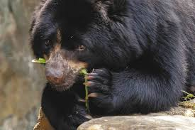

El oso ardino
 En Colombia, el oso andino, o oso de anteojos (Tremarctos ornatus), es una especie endémica de los Andes tropicales, que habita en bosques andinos, bosques de niebla y páramos, siendo un importante dispersor de semillas.
Amenazas
principalmente la pérdida y fragmentación de su hábitat debido a la expansión agrícola, minera y la construcción de carreteras, así como la caza ilegal.